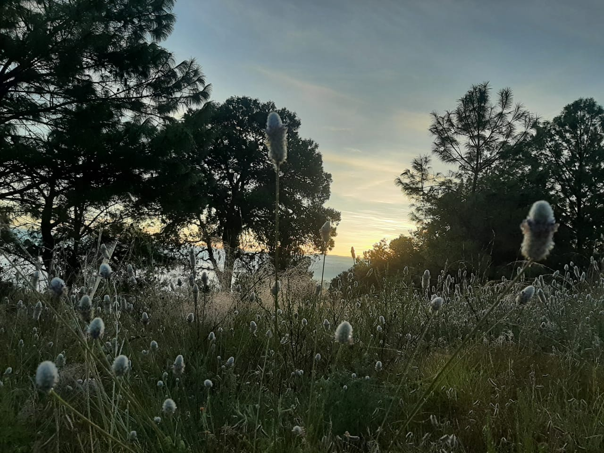

|
| |
| Principal Historia Curiocidades Ubicacion Contacto | Santa María Cuquila, ubicada en Tlaxiaco, Oaxaca, es un pueblo destacado en la región por su artesanía, especialmente la cerámica, que se comercializaba hasta la costa del estado. Tiene un sitio arqueológico llamado Ñuu Kuiñi o Cerro del Tigre, donde se puede observar un juego de pelota de gran importancia. Además, Cuquila conserva tradiciones como el compromiso formal para la boda, donde se realizan reuniones con los padres de los novios. Cerámica: Santa María Cuquila era conocida por su producción de diversas clases de cerámica, incluyendo las tinajas utilizadas para la elaboración de tepacheen ceremonias. Comercialización: Los productos artesanales de Cuquila se comercializaban en la región y hasta la costa de Oaxaca, llegando a ser muy populares. Sitio Arqueológico Ñuu Kuiñi: Este sitio arqueológico, también llamado Cerro del Tigre, alberga la historia de Cuquila.Juego de pelota: Destaca un juego de pelota de gran importancia entre los monumentos arqueológicos del sitio.
 Tradiciones: Cuando dos jóvenes establecen su compromiso, los padres de ambos se reúnen en la casa de la novia para acordar la fecha de la boda y realizar los preparativos. Ceremonias y rituales: Las tradiciones de Cuquila incluyen ceremonias y rituales, como los relacionados con el recibimiento de los novios después de la misa, el permiso para entrar a la casa, la comida, el baile y la despedida. Idiomas: La comunidad habla mixteco, castellano y muchos jóvenes dominan el inglés. Algunos ancianos hablan variantes del mixteco, la lengua triqui y el castellano. |